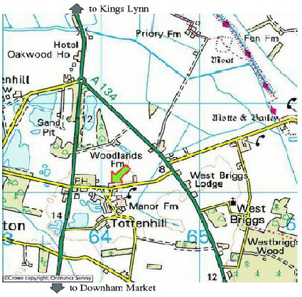

OBSERVING
There is a large area of land adjacent to the Village Hall which is an ideal location for observing sessions since it does not suffer from light pollution.
The Village Hall is well signed from A10 and is roughly half way between Kings Lynn and
Downham Market.
Take the road which runs alongside
The Dray & Horses public house which is,
directly opposite the entrance to Watlington Rd.
This Road is Whin Common Road.
Carry on for about 800 yds and look for a sign on your left - Village Centre.
Follow the sign.................................
Sat Nav Users - PE33 0RS

ALL MEETINGS ARE HELD AT
THE TOTTENHILL AND WORMEGAY VILLAGE HALL